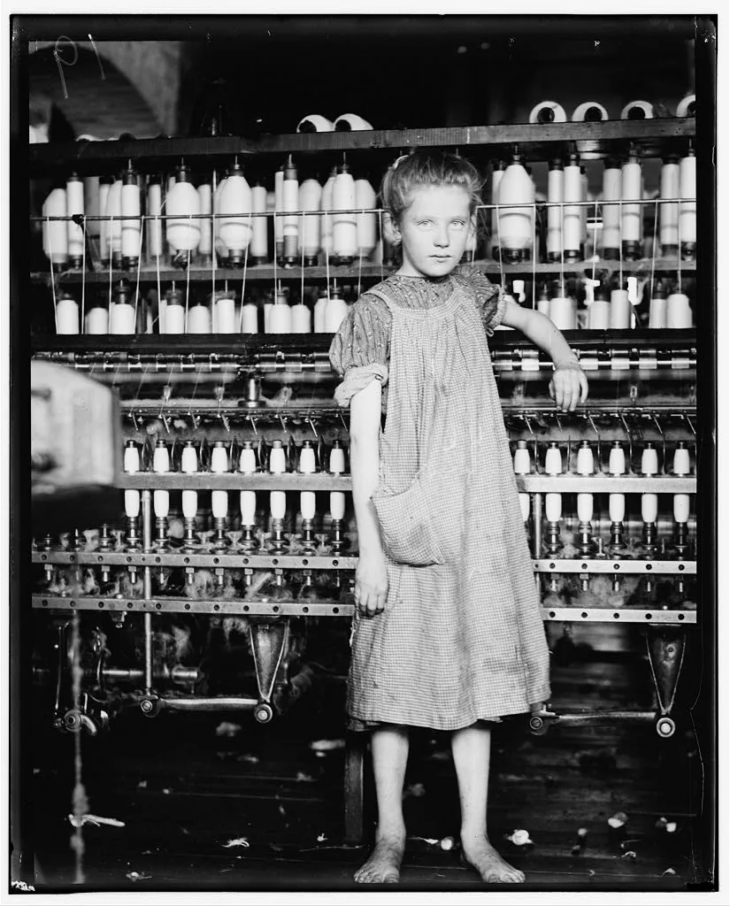

Cidadania, módulo 1, sessão 02
A imagem dos outros
Versão para imprimir: o material, os 14 exercícios e o papel do fim. Fazes tudo sozinho, só com uma caneta.
Parte 1, ver antes de concluir
Abre: A imagem dos outros
Caso inventado.
Na quinta-feira, a turma ensaia uma peça. A Marta aceita que o Duarte filme a cena, para a turma a rever depois e corrigir o que falha. Aos 40 segundos, ela escorrega e cai. Ao ver o vídeo, os colegas riem-se: a cena ficou ótima. Querem publicá-la na página da escola.
Aceitar ser filmado é aceitar ser publicado?
Decide
O vídeo do ensaio pode ir para a página da escola?
☐ Sim ☐ Não ☐ Depende
Escreve, numa linha, a razão que pesa mais para ti.
Exercício 1: A quem pertence a imagem
Em The Truman Show (Peter Weir, 1998), a vida de Truman passa na televisão; todos à volta são atores, menos ele. O que falta ao uso da sua imagem?
- O sim dos atores que vivem à volta dele.
- Um público que queira ver o programa.
- O sim dele, que ninguém lhe pediu.
Resposta: ______
Exercício 2: Mais do que a vida privada
Caso inventado: uma montagem põe a cara de um colega no corpo de um palhaço. Não mostra a vida privada dele; logo, o artigo 12.º da Declaração não o protege.
☐ Verdadeiro ☐ Falso
Olha: Uma fotografia de 1910
Antes de olhar Olha primeiro para a fotografia; só depois lê a legenda.

Lewis Hine (atribuição), Addie Card, 12 years. Spinner in North Pormal [i.e., Pownal] Cotton Mill. Vt., 1910. National Child Labor Committee collection, Library of Congress. Registo de origem. Domínio público (sem restrições conhecidas de publicação).
Exercício 3: O que só a legenda diz
Sem a legenda, o que ficarias sem saber sobre esta rapariga?
- O nome, a idade e a fábrica onde trabalha.
- Que está entre máquinas cheias de bobinas.
- Que está descalça, de vestido e avental.
Resposta: ______
Exercício 4: Um rosto que se reconhece
Mesmo sem a legenda, quem conhecesse a Addie podia reconhecê-la nesta fotografia.
☐ Verdadeiro ☐ Falso
Lê: O direito à imagem
Antes de ler Quando se pede?
N.º 1«O retrato de uma pessoa não pode ser exposto, reproduzido ou lançado no comércio sem o consentimento dela […]»
N.º 2«Não é necessário o consentimento […] quando a reprodução da imagem vier enquadrada na de lugares públicos […]»
N.º 3«O retrato não pode, porém, ser reproduzido, exposto ou lançado no comércio, se do facto resultar prejuízo para a honra, reputação ou simples decoro […]»
Código Civil, Diário da República
Lei n.º 58/2019, artigo 16.º«[…] os dados pessoais de crianças só podem ser objeto de tratamento com base no consentimento […] relativo à oferta direta de serviços da sociedade de informação quando as mesmas já tenham completado 13 anos de idade.»
Decoro: o respeito com que alguém se apresenta aos outros.
Exercício 5: O que precisa de um sim
No n.º 1, toca nas três palavras que dizem o que não se pode fazer ao retrato sem o sim da pessoa.
O retrato de uma pessoa não pode ser exposto, reproduzido ou lançado no comércio sem o consentimento dela
Exercício 6: Filmar, rever, publicar
Para cada uso do vídeo da Marta: o sim que ela deu já chega, ou falta perguntar-lhe?
- O vídeo vai para a página da escola.
- O Duarte filma a cena no ensaio.
- O Duarte manda o vídeo a um primo.
- A turma revê o vídeo para corrigir a cena.
- Falta perguntar-lhe
- O sim dela já chega
Liga: 1 ___ 2 ___ 3 ___ 4 ___
Exercício 7: Parte do lugar
Situação nova: fotografas a praça num dia de mercado, cheia de gente; as pessoas aparecem pequenas, ao longe. Para publicar, precisas do sim de cada uma?
- Sim, se alguém na praça tiver menos de 13 anos.
- Não, porque as pessoas aparecem como parte do lugar.
- Não, desde que não digas em que cidade foi tirada.
Resposta: ______
Exercício 8: Um lugar público não chega
Caso inventado: na mesma praça, alguém filma de perto um rapaz a escorregar e a cair numa poça. Como foi num lugar público, pode publicar o vídeo sem lhe perguntar.
☐ Verdadeiro ☐ Falso
Conceito: Um sim para um uso
O caso
A Marta disse que sim. Chega?
Mais perto
| O sim | No ensaio |
|---|---|
| vale para um uso | rever a cena, não publicá-la |
| pode ser retirado | se ela mudar de ideias |
| pede-se antes | antes de o vídeo sair |
O nome
Consentimento informado
Um sim de quem sabe para que serve a imagem.
O que não é
Não é ter 13 anos: essa idade, na Lei n.º 58/2019, é a dos serviços digitais.
No Código Civil, a limitação voluntária de um direito de personalidade «é sempre revogável», ainda que com obrigação de indemnizar (artigo 81.º, n.º 2).
Exercício 9: O que a Lia aceitou
Caso inventado: a Lia aceita trabalhar numa sala; ninguém lhe diz que as conversas lá dentro são transmitidas. «Aceitaste trabalhar aqui», diz o coordenador. Isso autoriza a transmissão?
- Depende de a Lia ter assinado um papel a aceitar.
- Não: ela aceitou trabalhar ali, não ser transmitida.
- Sim: quem aceita a sala aceita o que lá se passa.
Resposta: ______
Exercício 10: Um caso real
«[…] a 1.ª Autora não foi informada em concreto, dos propósitos a que se destinava […] as fotografias, tendo-lhe, no entanto, sido dito que as mesmas se destinavam a figurar numa publicação»
Caso real (Supremo Tribunal de Justiça, 2011): uma mãe e a filha, fotografadas na piscina do clube, saíram na capa de uma revista. A mãe (a «Autora») perdeu. Porquê?
- A revista tinha fins didáticos, por ser sobre o bem-estar.
- A piscina era um lugar público, onde não é preciso pedir.
- Tinham-lhe dito que as fotografias eram para uma publicação.
Resposta: ______
Parte 2, pesar e escrever
Volta ao caso: A direção diz que é para ensinar
Parte 2
Caso inventado.
A direção gosta da ideia: diz que o vídeo tem fins didáticos, porque mostra como se prepara uma peça. A Marta pede: «A queda não.» O Duarte responde: «Aceitaste ser filmada.»
Código Civil, artigo 79.º, n.º 2«Não é necessário o consentimento da pessoa retratada quando assim o justifiquem […] finalidades científicas, didácticas ou culturais […]»
Código Civil, Diário da República.
Exercício 11: O que se sabe e o que falta
Depois da resposta do Duarte: o que já está no caso e o que ainda está por saber?
- Se o vídeo serve mesmo para ensinar
- Se a queda prejudica o decoro dela
- Para que aceitou a Marta ser filmada
- O que a Marta pede sobre a queda
- Ainda está em aberto
- Já está no caso
Liga: 1 ___ 2 ___ 3 ___ 4 ___
Em turma
O vídeo do ensaio pode ir para a página da escola?
☐ Sim ☐ Não ☐ Depende
Compara com a tua escolha do início. Que razão pesou mais? ☐ O uso aceite (n.º 1) ☐ Fins didáticos (n.º 2) ☐ O decoro (n.º 3)
Exercício 12: Facto, regra ou razão
Liga cada frase ao que ela é numa justificação.
- «Aceitaste ser filmada.»
- A Marta aceitou ser filmada para a turma rever a cena.
- «O retrato de uma pessoa não pode ser exposto […] sem o consentimento dela»
- Um facto do caso
- Uma regra que vale para todos
- A razão de uma das partes
Liga: 1 ___ 2 ___ 3 ___
Exercício 13: A justificação por ordem
Põe a justificação por ordem: primeiro o facto, depois a fonte, a aplicação e, no fim, o limite.
- O Código Civil pede o consentimento da pessoa para expor o seu retrato.
- A Marta aceitou ser filmada só para a turma rever a cena.
- Falta saber se a queda prejudica o decoro da Marta.
- Pôr o vídeo na página da escola é expô-lo sem o sim dela.
Ordem: ___ → ___ → ___ → ___
Exercício 14: O que as provas permitem
Que conclusão fica dentro do que o caso e o artigo 79.º mostram?
- O sim de rever não chega; os fins didáticos estão por provar.
- A escola não pode publicar, porque quer humilhar a Marta.
- A escola pode publicar, porque a Marta aceitou ser filmada.
Resposta: ______
Agora, em papel
Num papel pequeno, sozinho e sem telemóvel.
Aceitar ser filmado é aceitar ser publicado?
CódigoData
- A tua conclusão, por agora.
- Uma prova: um facto do caso e uma expressão exata, entre aspas, com o artigo.
- Uma dúvida que ainda tens.
O que conta
- A conclusão responde à pergunta sem ir além das provas.
- A prova junta um facto a uma expressão exata, com o artigo.
- A dúvida, respondida, podia mudar a conclusão.
Um exemplo, sobre outro caso
Outro caso, inventado: uma aluna deixa-se fotografar para o cartão da biblioteca; a fotografia aparece num cartaz.
- Conclusão: o sim era para o cartão, não para o cartaz.
- Prova: foi fotografada para o cartão; o retrato não pode ser «exposto […] sem o consentimento dela» (artigo 79.º, n.º 1).
- Dúvida: alguém lhe falou do cartaz?